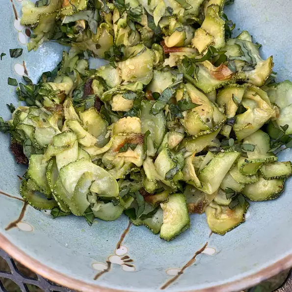

Warm Zucchini-Basil Salad

This is the perfect recipe if you have a lot of zucchini to use up. It is important to thinly slice the zucchini, so I use the slicer on my box grater. I sometimes fill 4 baking sheets at a time. You can eat it warm or cold. I will eat this portion all by myself.
Ingredients
- 2 tablespoons extra-virgin olive oil, or more to taste
- 2 zucchini, thinly sliced
- 1 pinch salt and ground black pepper to taste
- 2 tablespoons finely chopped fresh basil, or more to taste
Steps
- Preheat oven to 400 degrees F (200 degrees C). Grease 2 baking sheets with some olive oil.
- Combine thinly sliced zucchini and olive oil in a bowl. Spread zucchini slices out in a single layer on the baking sheets.
- Roast in the preheated oven until zucchini are soft and lightly browned on the edges, 20 to 25 minutes. Transfer to a bowl and allow to cool slightly.
- Season with salt and pepper. Add basil and mix to combine. Serve warm or cold.
Main page